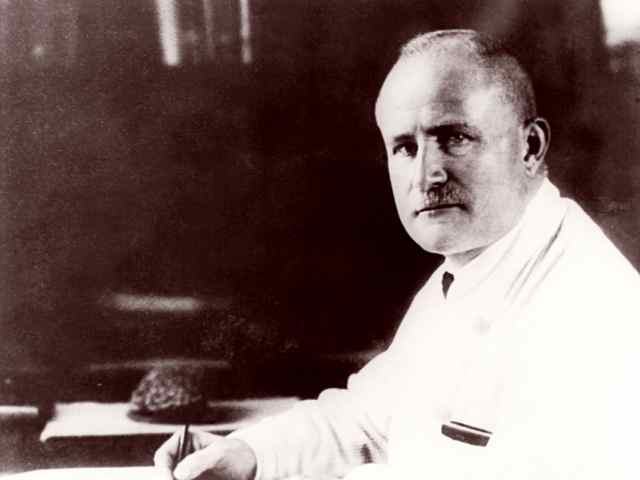

Key Milestones in BCI History
First Human EEG
Hans Berger records the first human electroencephalogram (EEG), laying the foundation for future BCI development.
Term "BCI" Coined
Dr. Grey Walter develops the first BCI device, demonstrating that electrical signals from the brain could control external devices.
P300 Discovery for Communication
Farwell and Donchin introduce the P300 speller, revolutionizing BCI-based communication for disabled individuals.
First Commercial BCI (The EPOC)
Introduction of first commercial BCI systems for communication and control, making the technology more accessible.
Advanced P300 Systems
Development of improved P300-based typing systems with enhanced accuracy and speed.
Modern Era
Integration of AI and machine learning with P300 BCIs, dramatically improving typing speed and accuracy.